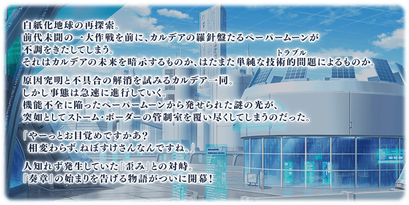
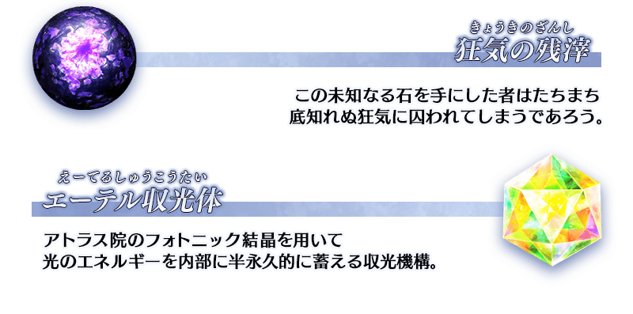
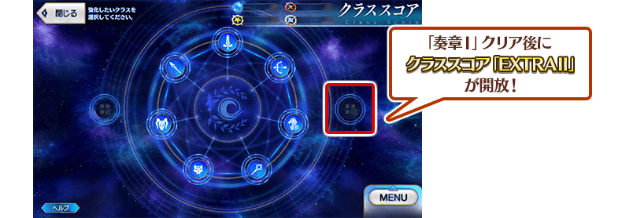

◆「奏章Ⅰ 虛數羅針內界 平面之月」開幕◆
突然從平面之月溢出的神祕之光。
被其包圍而造訪的世界中等待的是所謂的『扭曲』。敬請期待成為新故事開端的「奏章Ⅰ 虛數羅針內界 平面之月」！
◆公開時間◆
2023年6月18日(日) 17:00～
◆開放條件◆
通過奏章序幕(プロローグ) 「應盡職責的呼喚 0」
※不需要通過亞種特異點(從Ⅰ到Ⅳ)、主線關卡第2部 第5.5章、第2部 第6.5章。
※本頁面皆為開發中圖片。會有與實際圖片相異的情況。
介紹「奏章Ⅰ 虛數羅針內界 平面之月」的電視廣告！
動畫製作：A-1 Pictures
※2023年6月18日(日) 17:00～6月28日(三) 11:59的期間中，在最初啟動程式時會播放「奏章Ⅰ 虛數羅針內界 平面之月」的廣告影片。
※期間中、「奏章Ⅰ 虛數羅針內界 平面之月」的廣告影片會登錄到個人空間(マイルーム)的圖鑑(マテリアル)(故事)，在期間結束後刪除。
※6月25日(日) 17:00圖片追加 ※上述「★5(SSR)杜爾嘎」的立繪為靈基再臨第2階段。
自「奏章Ⅰ 虛數羅針內界 平面之月」追加2種新道具！
是新登場從者的技能強化及靈基再臨必要的道具。
主要能從在「奏章Ⅰ 虛數羅針內界 平面之月」主線關卡出現的敵人做為戰利品和關卡通過報酬。

2種新道具也預定在達文西工房的「純淨稜鏡交換」的交換對象追加！
自2023年7月2日(日) 12:00，在達文西工房的「純淨稜鏡交換」的交換對象追加「狂氣的殘渣」與「乙太收光體」。
請務必在新登場從者的培育上活用！
◆交換對象追加時間◆
2023年7月2日(日) 12:00～(預定)
通過「奏章Ⅰ 虛數羅針內界 平面之月」後，開放「職階刻痕」的「EXTRAⅡ」！
「職階刻痕」是可提高做為自身御主能力的強化各職階功能。
「EXTRAⅡ」雖然是Extra職階的中的4種做為對象的「職階刻痕」，但
於通過「奏章Ⅰ 虛數羅針內界 平面之月」的時間點只可得到1職階的效果。
◆開放日◆
2023年6月18日(日) 17:00～
◆開放條件◆
通過「奏章Ⅰ 虛數羅針內界 平面之月」


由於在「Fate/Grand Order 迦勒底放送局 Vol.20 奏章Ⅰ 虛數羅針內界 平面之月 開幕前夕 & FGO Fes. 2023 SP」達成7萬轉推，實施放送記念登入獎勵！
在下述期間中登入的話，贈送聖晶石14個。
◆領取期間◆
2023年6月15日(四) 3:00～6月22日(四) 2:59
上述期間中，在初次登入到「Fate/Grand Order」的時間點，贈予到禮物箱。
※期間內未登入的話無法領取。
※禮物只能領取1次。
◆贈送內容◆
聖晶石 14個
◆贈送對象◆
2023年6月15日(四) 2:59前通過「特異點F 炎上汙染都市 冬木」的御主對象
※上述時間前，在管理室(ターミナル)畫面的關卡橫幅必須要有「CLEAR」的文字顯示。
【6月25日(日) 17:00追記】
在「奏章Ⅰ 虛數羅針內界 平面之月」的特設頁面，智慧型手機用桌面的贈送實施中！
在社群媒體分享特設頁面就能下載，請務必使用。
◆配發期間(2週內)◆
2023年6月18日(日) 17:00～7月2日(日) 11:59
◆特設頁面◆
https://www.fate-go.jp/special/2023-paper_moon/
※6月25日(日) 17:00圖片更新
【6月25日(日) 17:00追記】
其他還有，期間限定「平面之月 杜爾嘎Pick Up召喚」等的情報公開中！
關於詳情，請自下述橫幅確認。
■「平面之月 杜爾嘎Pick Up召喚」詳細情報

■「平面之月 怖軍Pick Up召喚」詳細情報

■「平面之月 迦摩(Assassin)Pick Up召喚」詳細情報